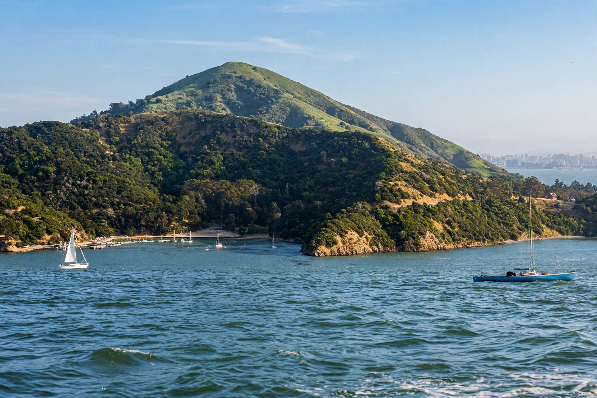

Angel Island is the largest natural island in San Francisco Bay, California, with an area of about 740 acres (3.0 km²). The entire island is a California state park, administered as Angel Island State Park, and is known for the Angel Island Immigration Station, which processed hundreds of thousands of immigrants between 1910 and 1940.
| Angel Island | |
|---|---|
| Location | San Francisco Bay, Marin County, California |
| Area | 740 acres (300 ha) |
| Highest point | Mount Livermore, 788 ft (240 m) |
| Designation | California State Park |
From 1910 to 1940 the island's immigration station processed immigrants chiefly from China, Japan and other Asian countries. Because of the Chinese Exclusion Act, many Chinese arrivals were detained for weeks or months in wooden barracks; detainees carved hundreds of poems into the walls, which are now preserved. The station is often called the "Ellis Island of the West", though the experience of Asian immigrants there was frequently harsher and longer.
The island served Coast Miwok people for millennia, was named Isla de los Ángeles by the Spanish explorer Juan Manuel de Ayala in 1775, and later hosted a Civil War–era army post (Camp Reynolds), a quarantine station, and Cold War Nike missile sites before becoming a state park in stages from 1958.
Angel Island (California) — recreated from memory.